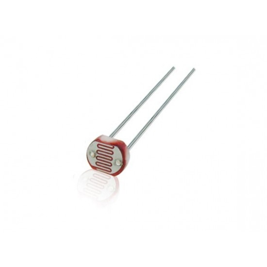
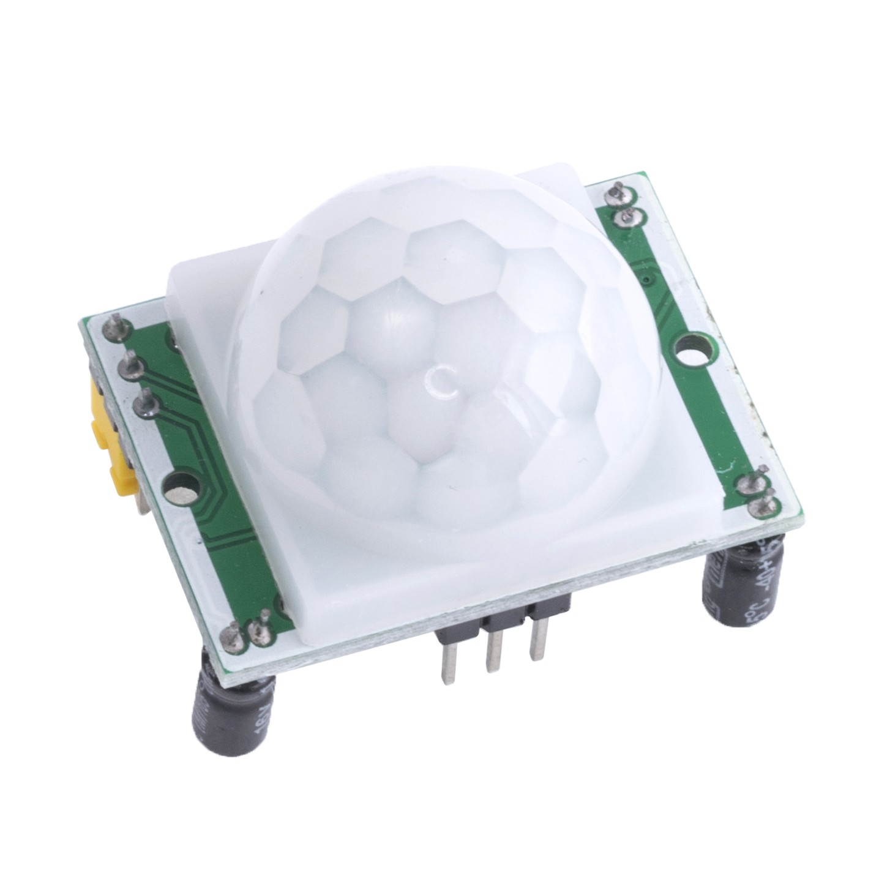
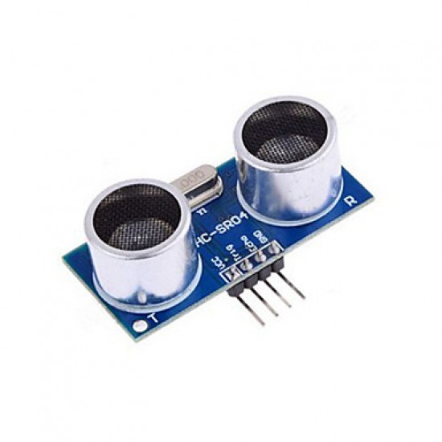
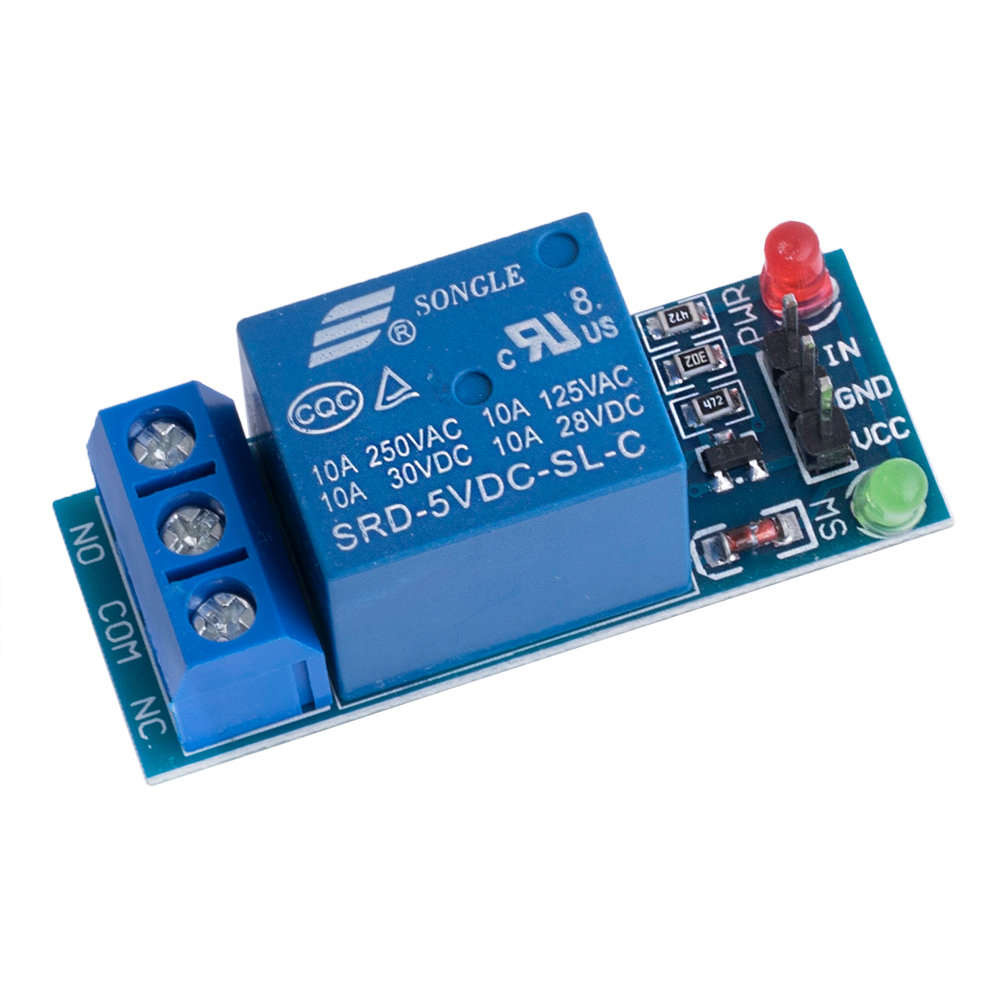
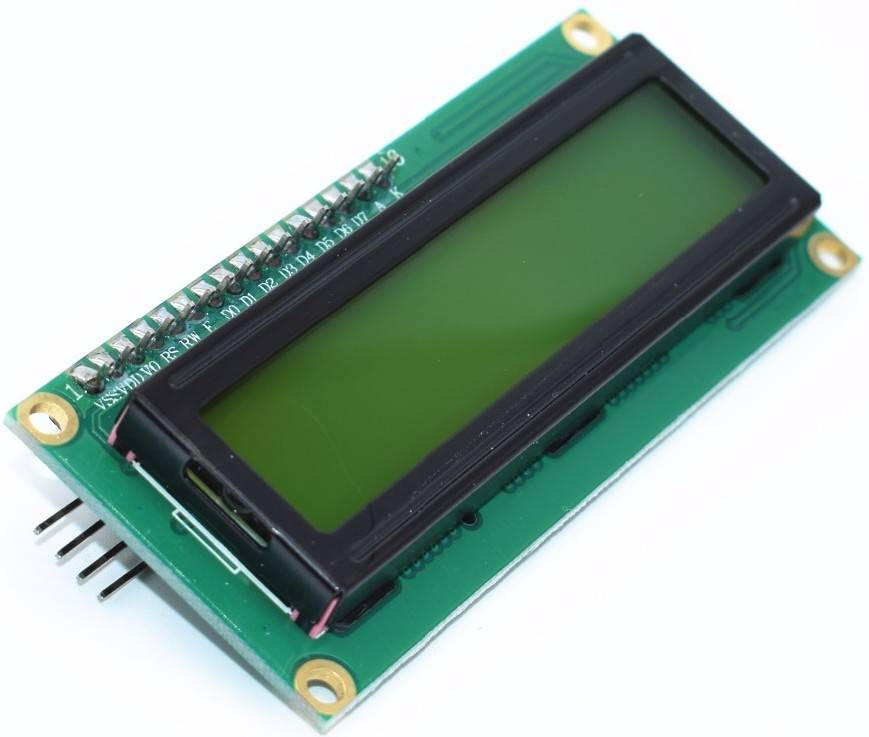
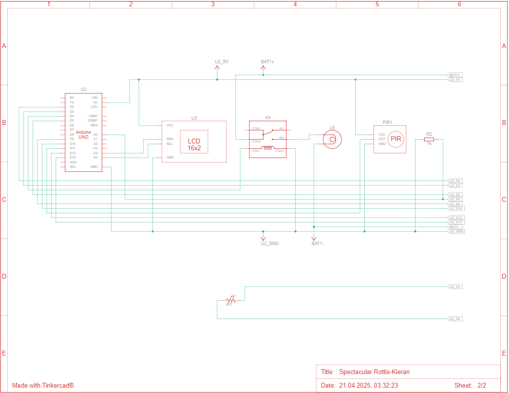
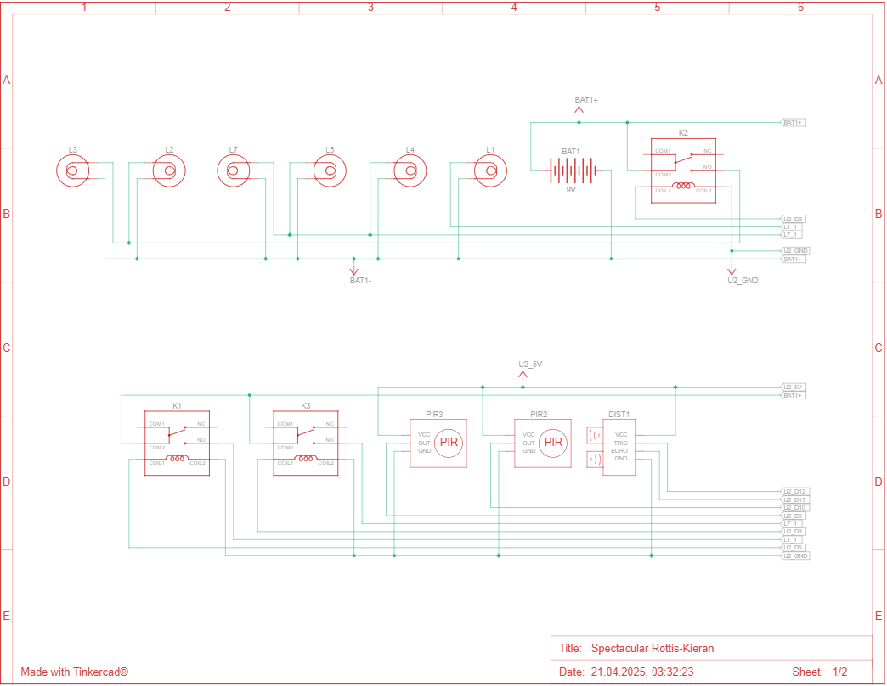

Принцип роботи системи
Детальний опис функціонування автоматизованого освітлення
1
Вимірювання освітленості
Фоторезистор постійно вимірює рівень природного освітлення в приміщенні. Система аналізує ці дані для визначення необхідності штучного освітлення.

2
Виявлення руху
При недостатньому природному освітленні система активує датчики руху (PIR або ультразвукові). При виявленні руху в контрольованій зоні відправляється сигнал до контролера.


3
Активація освітлення
Контролер (Arduino) отримує сигнал від датчиків і вмикає відповідне реле, яке живить світлодіодні лампи. Час роботи налаштовується (за замовчуванням - 5 хвилин).

4
Візуалізація стану
На LCD дисплей виводиться інформація про стан кожної зони освітлення, час до автоматичного вимкнення та поточний рівень освітленості.

Логіка роботи системи


Список компонентів
| Назва | Кількість | Компонент |
|---|---|---|
| U2 | 1 | Arduino Uno R3 |
| R1 | 1 | Фоторезистор |
| DIST1 | 1 | Ультразвуковий датчик відстані (4 виводи) |
| PIR1 PIR2 PIR3 |
3 | Піроелектричний ІК-датчик |
| L1 L2 L3 L4 L5 L6 L7 |
7 | Лампа розжарювання |
| K1 K2 K3 K4 |
4 | Однополюсне реле |
| BAT1 | 1 | Батарея 9 В |
| U3 | 1 | На базі PCF8574, 39 (0x27) ЖК-екран 16 x 2 (I2C) |
| R2 | 1 | 1 kΩ Резистор |
Технічні характеристики
Чутливість
- Дальність виявлення руху: до 5 метрів
- Кут огляду датчиків: 110°
- Поріг освітленості: 550 люкс
Таймінги
- Час роботи після активації: 5 хв (налаштовується)
- Затримка між опитуваннями: 700 мс
Живлення
- Напруга: 5V DC
- Споживання: до 500mA
- Кількість каналів: 4